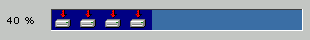

examples
examples$Date$
 Introduction
IntroductionThis example requires :
This example will run a natural horizontal ProgressBar and show you how to use a picture instead of simple color for active cells.
Percent text info is centered on a 60 pixels width area, on left side of the progress bar.
[Top]
 Render options
Render options active-color = #000084 inactive-color = #3A6EA5 width = 25 spacing = 0 background-image = download.gif
width = 1 style = inset color = white
width = 60 font-size = 10 background-color = #C3C6C3 align = center valign = left
[Top]
 Output
Output
[Top]
 PHP source syntax highlight
PHP source syntax highlight[Top]
 Play demo
Play demoRun the script.
[Top]